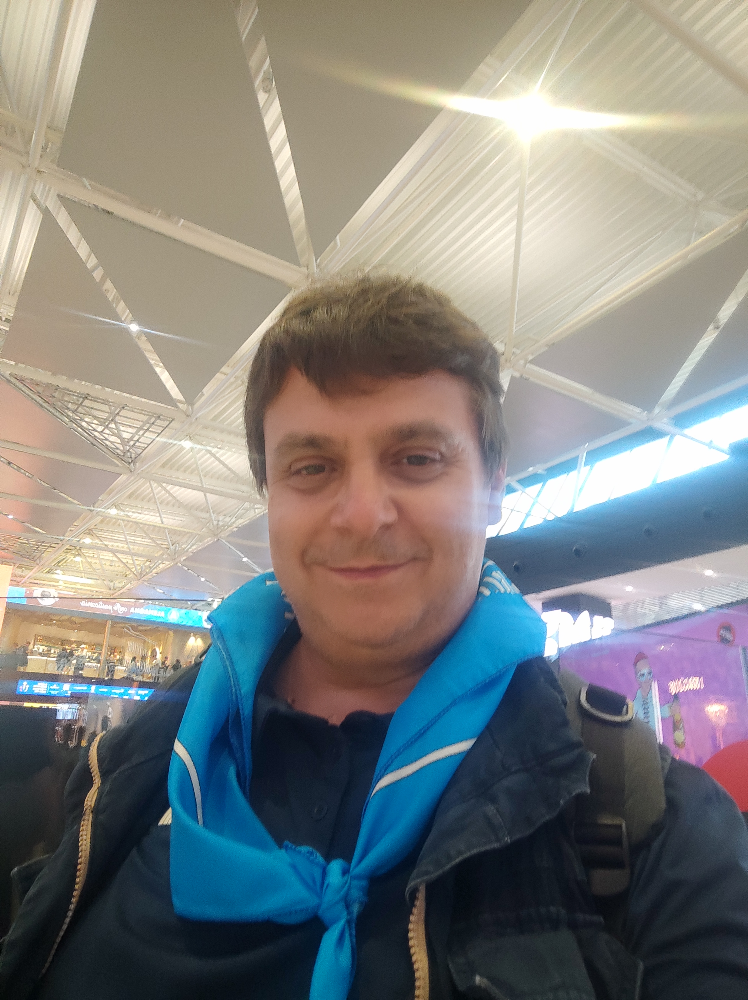
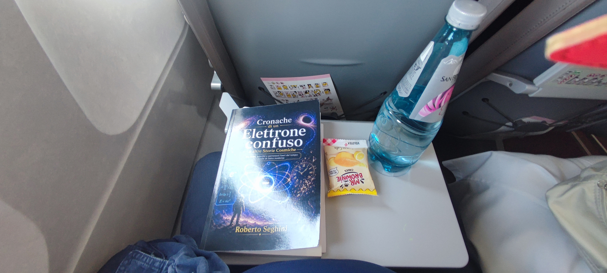
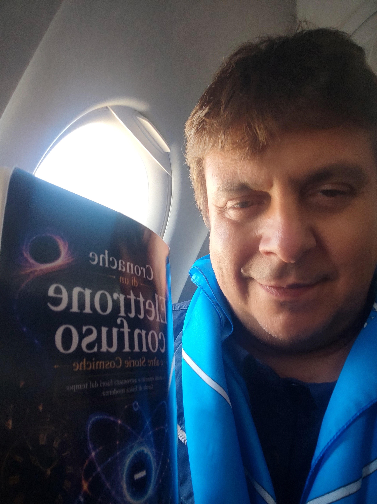
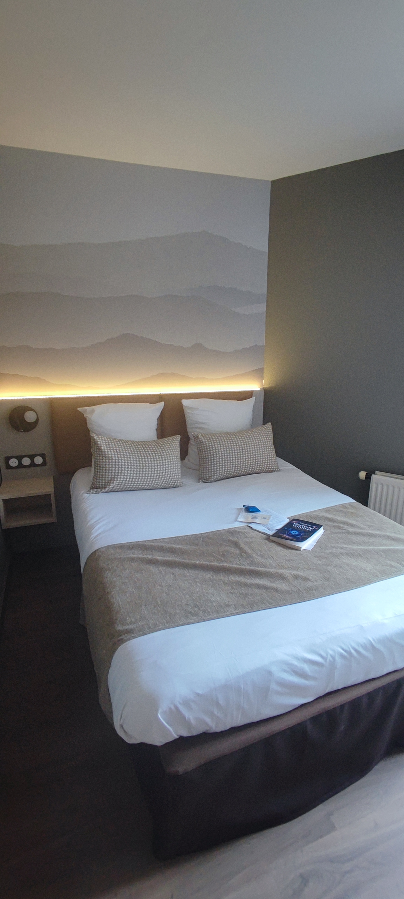
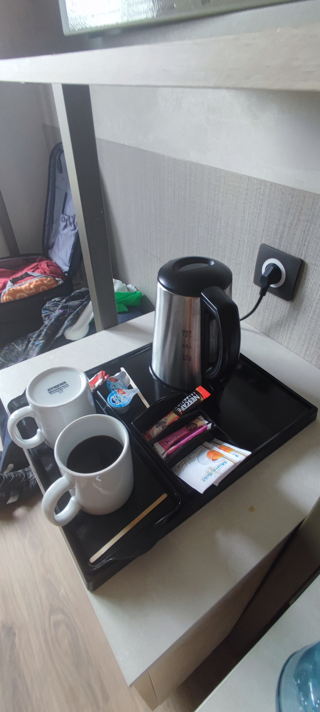

Archivio fotografico
Il mio viaggio a Lourdes — luglio 2026
La preparazione e la partenza





Il viaggio verso Lourdes
Fotografie in preparazione
Lourdes e la vita quotidiana
Fotografie in preparazione
Il gruppo
Fotografie in preparazione
Il Santuario
Fotografie in preparazione
I luoghi di Bernadette
Fotografie in preparazione
La Via Crucis
Fotografie in preparazione
Gli ultimi momenti
Fotografie in preparazione
I ricordi conservati
Fotografie in preparazione
Torna alla pagina principale